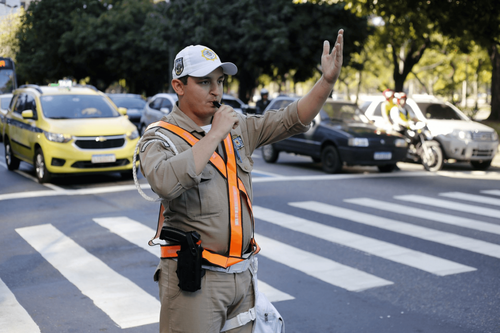
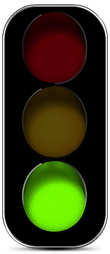

Sinais de Trânsito que todo motorista precisa conhecer
Segundo o art. 87 do Código de Trânsito Brasileiro (CTB), existem 6 tipos de sinais de trânsito: sinais verticais, sinais horizontais, sinais semafóricos, sinais de obras, sinais sonoros e dispositivos auxiliares. Cada um tem sua importância e significado.
1 - Sinais verticais
Os sinais verticais são as placas postas nas laterais ou acima das vias de trânsito, que transmitem mensagens aos condutores. Essas mensagens podem ser permanentes e variáveis.
2 - Sinais horizontais
Os sinais horizontais são as sinalizações pintadas nas vias públicas e particulares de trânsito. Essa sinalização pode ser em formato de símbolos ou faixas.
3 - Sinais semafóricos
Há dois tipos de sinais semafóricos (por vezes chamados de sinais luminosos), sendo semáforos de sinalização e semáforos de advertência.
Os semáforos de sinalização são os mais comuns, é por eles que o fluxo de veículos e pedestres é controlado. É através do semáforo de sinalização que ocorre a alteração de direito de passagem.
O semáforo de sinalização que controla o fluxo de automóveis é composto por três cores. Já o semáforo que controla o fluxo de pedestres é composto por duas: verde e vermelho.
Os semáforos de advertência podem ser visto com mais frequência em estradas. Esses, por sua vez, têm a função de alertar os condutores sobre a existência de obstáculos ou situações perigosas que precisem de atenção redobrada.

4 - Sinais de obras
Os sinais de obras no trânsito podem ser feitos por sinalização vertical, horizontal, semafórica, sonoros, por gestos e por dispositivos auxiliares que identifiquem o caráter temporário da obra naquela via.
5 - Sinais sonoros
Algumas pessoas confundem buzinas e sirenes como sinais sonoros, e apesar desses sons serem uma forma de se comunicar no trânsito, não é disso que se trata o sinal sonoro.
6 - Dispositivos auxiliares
Dispositivos auxiliares são recursos físicos de diferentes cores, tamanhos e formatos, colocados nas vias e em obstáculos que estejam interferindo no fluxo de veículos.
Os dispositivos auxiliares, diferentes das outras sinalizações de trânsito, não têm uma forma padrão e por vezes podem ser de uso temporário. Os cones, por exemplo, são dispositivos auxiliares e são usados apenas quando a necessidade realmente existe.